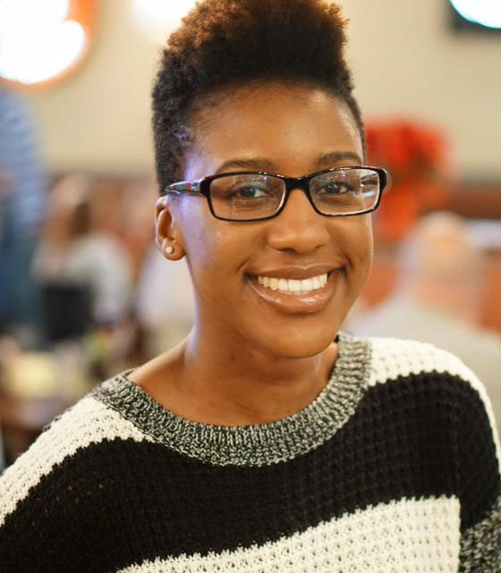

About Me

My name is Faith Simunyu and I am a Medical Illustrator/ Visual Communicator from North Carolina. I have a passion for understanding the chemistry and biology
of disease in addition to the artistic expression of science. My goal is to create visuals (in the form of illustrations and animations) to render science beautifully, as researchers, physicians and educators understand it.
Education
CodeAbode,
Chicago, IL
Chicago, IL
National Museum of Health and Medicine Chicago (NMH+MC)
14-week CodeAcademy Bootcamp, completed November 2015
14-week CodeAcademy Bootcamp, completed November 2015
University of Illinois at Chicago,
Chicago, IL
Chicago, IL
Master of Science in Biomedical Visualization,
received May 2015
received May 2015
Denison University,
Granville, OH
Granville, OH
Bachelor of Arts in Chemistry,
received May 2013
received May 2013
Work Experience
CodeAbode, Music Draw App,
Chicago IL
November 2015
Chicago IL
November 2015
Programmer:
Utilized p5.js sound library to develop a Music Draw App that contains textured brushes whose color and size change in response to the volume of music.
University of Illinois at Chicago, Developing a Virtual Pre-Lab
Chicago IL
Fall, 2014–Spring, 2015
Chicago IL
Fall, 2014–Spring, 2015
Illustrator, Programmer and Researcher:
Developed a Virtual Pre-Lab to help Biochemistry students understand the Cation Exchange Chromatography procedure
in the Yeast Cytochrome c Purification Lab. Research received a Vesalius Trust Research Grant from the Association of Medical Illustrators.
University of Illinois at Chicago,
Chicago IL
Fall, 2014
Chicago IL
Fall, 2014
Illustrator:
Created a 3D illustration of healthy kidneys using data from the Visible Human Male Project.
Contributed work for the exhibit, "Visualization of Healthy and Diseased Organs from the Visible Human Male" at NMH+MC.
Denison University, Emotional (less) Combinations of Molecules,
Granville, OH
April 29–May 5, 2013
Granville, OH
April 29–May 5, 2013
Illustrator:
Hosted a solo art show in the Chemistry and Biochemistry Department.
Exhibited portraits, figure drawings and illustrated donor-acceptor liquid
crystal mixtures as various combinations of molecules.
UNCF/Merck Undergraduate Science Research Initiative,
Rahway, NJ
June 2012–Aug 2012
Rahway, NJ
June 2012–Aug 2012
Research Assistant to Dr. Saj Parathath:
Cultured and maintained HEPG2 liver cells from a human cell line; quantified RNA of LXR target genes using PCR. Used LXR agonists to generate titration curves in HEPG2 cells.
Denison University, Anderson Summer Research Assistantship,
Granville, OH
May 2011–July 2011
Granville, OH
May 2011–July 2011
Research Assistant to Dr. Joseph Reczek:
Synthesized and purified naphthalene derivatives for donor-acceptor columnar liquid crystal systems.
Characterized materials using NMR Spectroscopy, DSC, GC-MS and Polarized
Optical Microscopy.
Presentations
OA Parkes Symposium & Student Conference, Augusta, GA
2015
2015
Strenstrom Scholars Session
Developing a Virtual Pre-Lab: Understanding the Cation Exchange Chromatography Procedure in the Yeast Cytochrome c Purification Lab
Developing a Virtual Pre-Lab: Understanding the Cation Exchange Chromatography Procedure in the Yeast Cytochrome c Purification Lab
American Chemical Society National Meeting, New Orleans, LA
2013
2013
Poster Session
LXR and FXR Response in Human Liver Cells
LXR and FXR Response in Human Liver Cells
American Chemical Society National Meeting, San Diego, CA
2012
2012
Poster Session
Cross-Linking Stabilization of Donor-Acceptor Columnar Liquid Crystals
Cross-Linking Stabilization of Donor-Acceptor Columnar Liquid Crystals
UNCF/Merck Undergraduate Science Research Initiative, Rahway, NJ
2012
2012
Poster Sessions
LXR and FXR Response in Human Liver Cells
Cross-Linking Stabilization of Donor-Acceptor Columnar Liquid Crystals
LXR and FXR Response in Human Liver Cells
Cross-Linking Stabilization of Donor-Acceptor Columnar Liquid Crystals
Honors and Awards
Association of Medical Illustrators, 2015
Vesalius Trust Research Grant Recipient for Visual Communication in the Health Sciences
University of Illinois at Chicago, 2015
Finalist in the Image of Research Competition
University of Illinois at Chicago, 2014
Board of Trustees Tuition Waiver
Denison University, 2013
John C. Weaver Award
Denison University, 2012 – 2013
Senior Chemistry and Biochemistry Departmental Fellow
UNCF/Merck, 2012 – 2013
UNCF/Merck Undergraduate Science Research Initiative Scholarship
Denison University, 2012 – 2013
Dwight Spessard Memorial Scholarship
Denison University, 2011 – 2012
Martin Luther King Jr. Scholarship
Denison University, 2011
Anderson Summer Research Assistantship
Denison University, 2009 – 2013
Posse Foundation Full-Tuition Leadership Scholarship
Skills
Digital Media
3D Modeling,
3D Animation,
3D Interactivity,
2D and 3D Illustration
Adobe Creative Suite and Autodesk
After Effects,
Premiere,
Audition,
Photoshop,
Illustrator,
InDesign,
3D Studio Max,
Mudbox,
Unity 3D,
Pixologic ZBrush,
Visual Molecular Dynamics (VMD)
Web Development Software and Programming
HTML and CSS,
Javascript,
Node JS
Exhibitions
University of Illinois at Chicago,
Chicago IL, 2015
Chicago IL, 2015
Image of Research Exhibition
Northwestern University,
Evanston IL, 2014
Evanston IL, 2014
Annual Public Health Matters Seminar, Northwestern Public Health Review Gallery
"Communicating Public Health Through Pictures"
NMH+MC, Chicago IL, 2014
Student Association of Medical Artists (SAMA) Art Show
NMH+MC, Chicago IL, 2014
Organ Pathology Exhibition
Toronto ON, 2014
Biocommunication Academic Meeting Toronto (BAMTO) Student Salon
Rochester MN, 2014
Association of Medical Illustrators Annual Conference Student Salon
Denison University,
Granville OH, 2013 – present
Granville OH, 2013 – present
Permanent artwork collection at Denison University Department of Chemistry
and Biochemistry
NMH+MC, Chicago IL, 2013
Student Association of Medical Artists (SAMA) Art Show
Granville OH, 2013
Solo Art Show Exhibition "Emotional (less) Combinations of Molecules", Granville OH
Professional Affiliations
2016 – present, Professional Member
Association of Medical Illustrators (AMI)
2014 – 2015, Student Member
Association of Medical Illustrators (AMI)
2013 – 2015, UIC
Student Association of Medical Artists (SAMA)
2011 – 2013, Student Member
American Chemical Society (ACS)
Contact
1112 Chamberwell Avenue
Wake Forest, NC 27587
Email: simunyubiomedvisuals@gmail.com
Website: simunyubiomedvisuals.com